A London-based premium private hire company operates a large fleet of professional drivers across the city. The existing Driver App was the central tool through which drivers received jobs, tracked earnings, and communicated with support — yet it was failing at all three.
I was brought in to diagnose the problems and redesign the product end-to-end — navigating a complex stakeholder ecosystem of call center agents, operations staff, and passengers, while keeping the driver at the centre. They are the only people customers ever actually meet, and without them, there is no business.
I got in cabs with drivers, sat with call center agents, attended driver training, and read through App Store reviews to understand where the experience was breaking down.
Shadowing the operations and support teams was equally important — drivers don't exist in isolation, and understanding the full ecosystem was the only way to design something that worked for everyone in it.
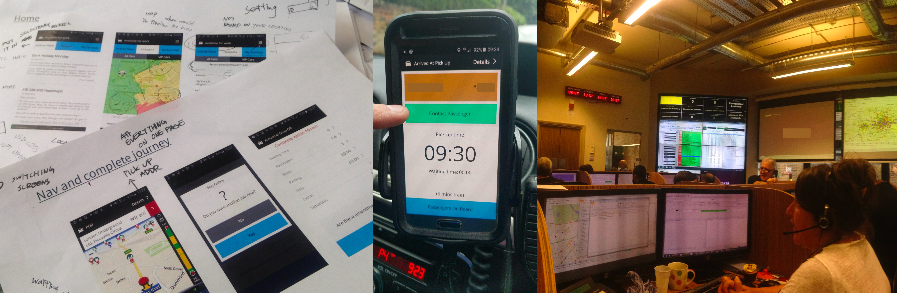
Mapping the journey across three actors — Passenger, Company, and Driver — made one thing clear: the problems weren't isolated. Every time a driver struggled, it created a ripple through the entire system.
Almost every step of the core on-job workflow carried a pain point. The redesign couldn't be a collection of individual fixes — it needed a strategy that addressed the underlying causes.
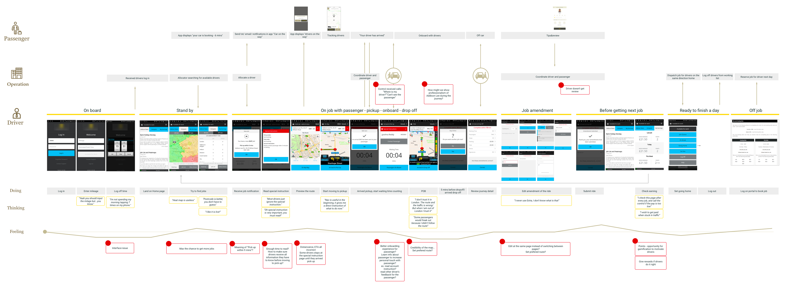
"I am not spending my morning tapping 7 times on my phone."
"Heatmap is useless."
"Postcode is more useful, you don't have to guess."
"Some passenger would freak out because I didn't follow the route."
"I check this page after every job, and call the control if the pay is too low."
The landing page was a news feed that nobody read. The most important section — the Job List — required two taps to reach. Help and Job History were buried in a hamburger menu that mixed critical and trivial functions together.
Different UI patterns coexisted without coherence. Colours carried no consistent meaning. Red appeared for both errors and standard buttons. Drivers couldn't glance and act.
The built-in map was unreliable and drivers didn't trust it — so they carried a second phone purely for navigation.
Frequent crashes during the most stressful moments — arriving at pickup, submitting amendments — destroyed driver trust and increased support call volume. Instability was both a technical and experience problem.
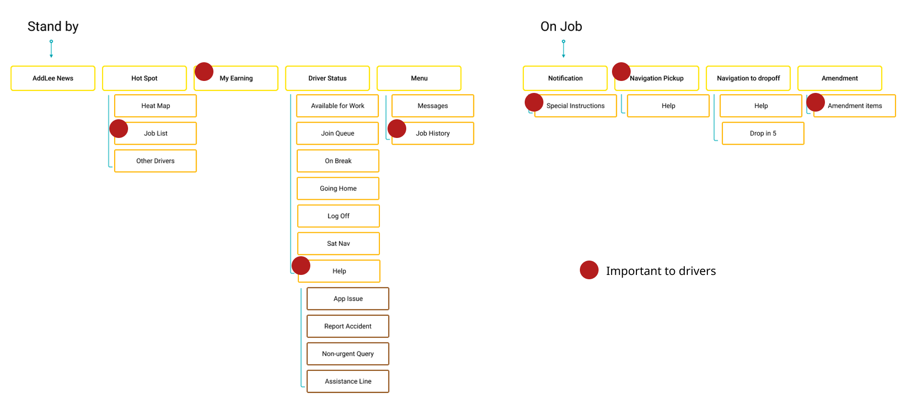
I benchmarked leading ride-hailing driver apps across three areas: exploring jobs, the pickup experience, and earnings. Both had solved glanceability far more effectively than our app — letting drivers act without reading.
Make the most important information immediately accessible within 3 taps. Navigation should reflect what drivers actually care about: jobs, earnings, and communication.
The interface should work for drivers. Every element is recognisable at a glance, readable in a second, tappable with one thumb.
Standard patterns reduce cognitive load; consistency builds trust.
Help drivers achieve their goals — more jobs, better pay, stronger ratings — by surfacing the data the system already holds. Drivers shouldn't have to guess what the company already knows.
Evolve, don't revolutionise — familiar enough to trust, refined enough to work.
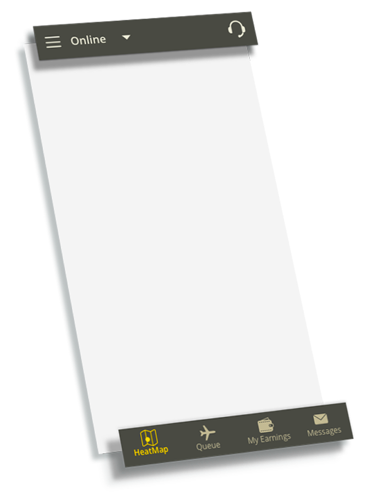
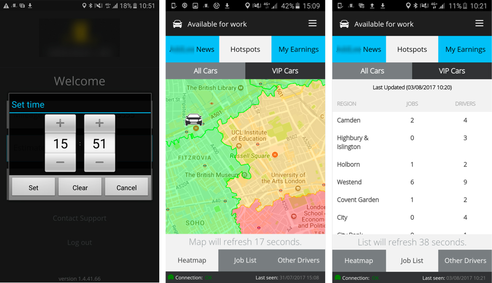
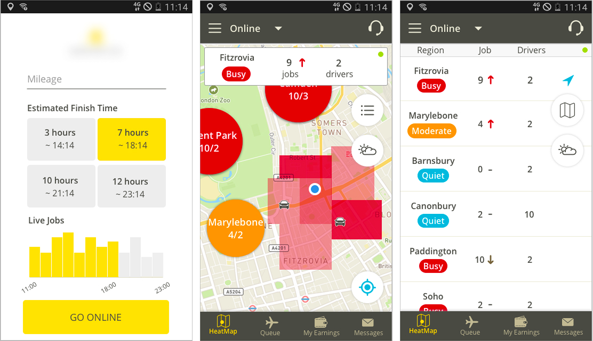
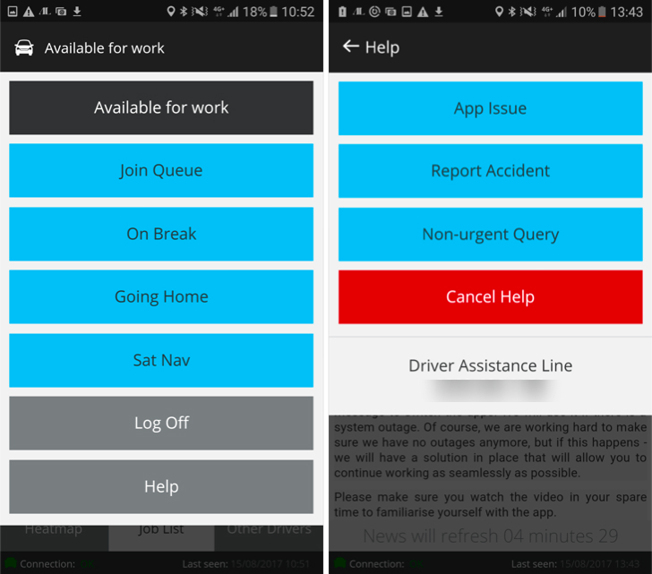
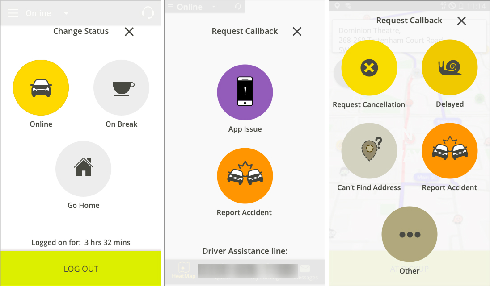
"I would love to see my reviews from customers, either good or bad, so I can improve my job."
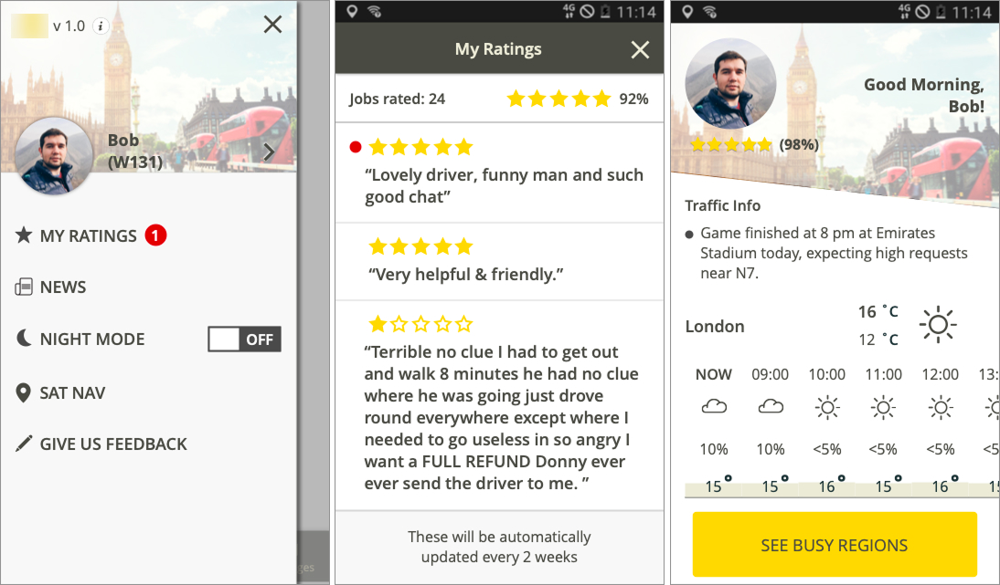
Many drivers work nights. Bright white screens cause eye strain and reduce night vision — and drivers expressed a clear preference for a darker interface even during the day.
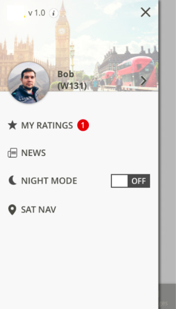
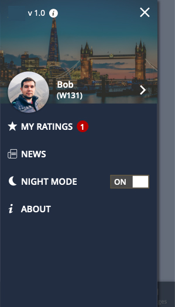
Effective dark mode: low saturation, reduced contrast, and typography that holds legibility in low light.
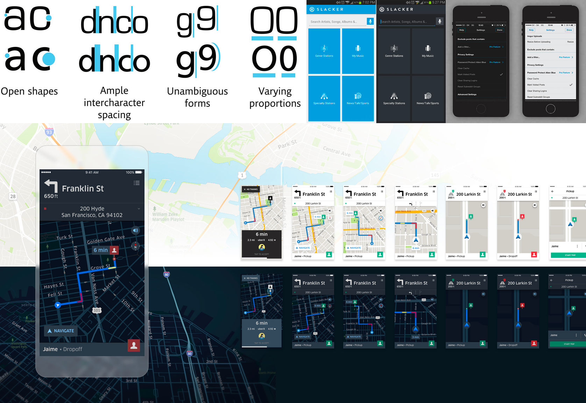
Two dark mode palettes explored — a warm neutral grey and a cool navy blue.
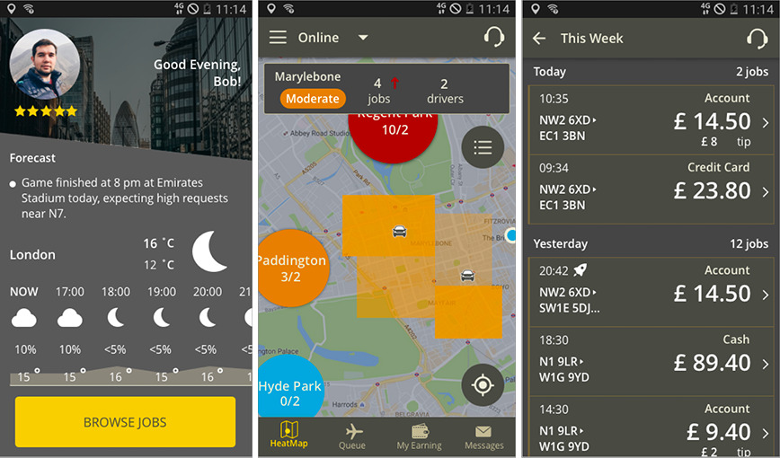
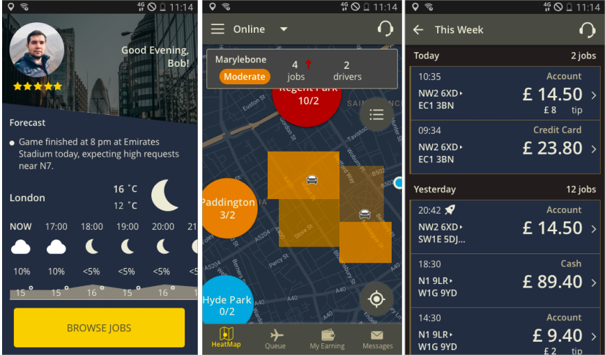
Clearer on-job flows, pre-populated forms, and inline confirmations eliminated many of the routine support calls that burdened the operations team daily.
Drivers reported feeling more in control of their shift — knowing demand levels, understanding their earnings, and trusting the navigation enough to stop carrying a second device.
The redesign established a component library and design system that the team could build on — reducing future design and development overhead significantly.
Designing for a driver on the road is fundamentally different from designing for someone at a desk. The constraint of one-handed use at arm's reach, under time pressure, changed almost every decision — from tap target size to information density to colour contrast. Getting in the car wasn't optional; it was essential.
The tip notification and ratings features were initially deprioritised as "nice to haves." Research showed they were essential to driver motivation and retention. Emotional design isn't polish applied at the end — it's a core functional requirement that needs to be researched and designed with the same rigour as any other feature.
Every design decision made for drivers had downstream effects on call center agents, support staff, and operations. The stakeholder map wasn't just a research deliverable — it was a constant reference point for evaluating trade-offs throughout the project.
Drivers had been burned by the old app. Rebuilding trust required consistency — consistent patterns, consistent naming, consistent behaviour under load. A visually beautiful app that crashes is worse than an ugly one that works. Technical reliability and UX quality are not separable concerns.